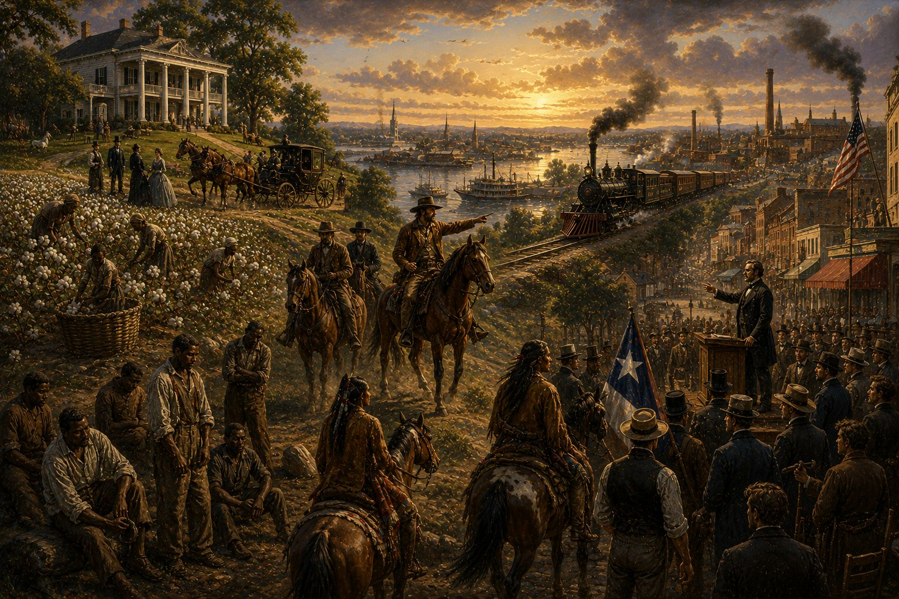
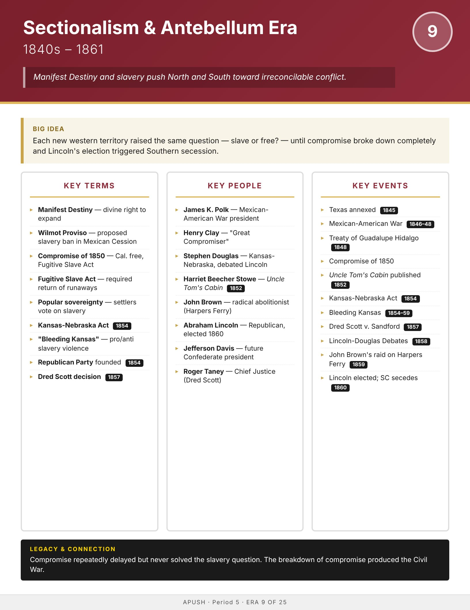

Era
Wise
AP History
AP United States History
Home
Course Sequence
Eras
Exam Prep
← Course Sequence

Era 9 of 25 · AP Period 5 · Lessons 20–22
Sectionalism & Antebellum Crisis
1840s–1861
Open infographic full size
Print

← ERA 8
Westward Expansion & Manifest Destiny
ALL ERAS
Eras index
ERA 10 →
Civil War